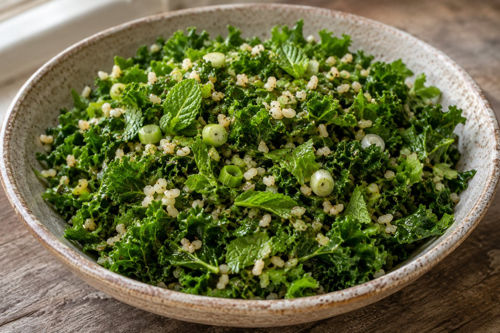

Grüne Taboulé mit Grünkohl (Tabbouleh Khadra)

Grüner Bulgursalat mit Grünkohl, Petersilie, Minze und Frühlingszwiebeln in einem Zitronen-Olivenöl-Dressing mit Zimt und Piment.
Für 4 Personen
Zutaten
Für den Salat
- 50 g Bulgur (gewöhnlicher oder Vollkornbulgur)
- 70 ml kochendes Wasser (im Zubereitungstext genannt)
- 180 g Grünkohl, Blätter von den Stielen gezupft und in feine Streifen geschnitten
- 75 g Petersilie, überwiegend Blätter statt Stiele, fein geschnitten
- 35 g Minzblätter, fein geschnitten
- 3 große oder 6 normal große Frühlingszwiebeln, in sehr feine Ringe geschnitten
Für das Dressing
- 80 ml Zitronensaft (von ca. 2 Zitronen)
- 35 ml Olivenöl
- 1 Prise Zimt
- ¼ TL gemahlener Piment
- ¾ TL Salz (Menge aus dem Zubereitungstext)
- Reichlich frisch gemahlener schwarzer Pfeffer
Zubereitung
- Den Bulgur in eine kleine Schüssel geben, mit 70 ml kochendem Wasser übergießen und etwa 20 Minuten quellen lassen, bis er das Wasser aufgenommen hat.
- Für das Dressing Zitronensaft, Olivenöl, Zimt und Piment verrühren. Mit ¾ TL Salz und reichlich Pfeffer würzen und beiseitestellen.
- Den Bulgur in eine große Schüssel geben und die übrigen Salatzutaten hinzufügen. Das Dressing darübergießen, alles gründlich vermischen und servieren.
Hinweise aus der Vorlage
Der Salat kann vorbereitet werden; das Dressing erst kurz vor dem Servieren hinzufügen. Kräuter fein schneiden statt wiederholt grob zu hacken, damit sie ihre Struktur und Farbe besser behalten.
Alternativen laut Vorlage: Grünkohl kann je nach Saison durch andere Kohlsorten ersetzt werden, etwa Weißkohl, Spitzkohl, Frühlingskohl oder Blumenkohl. Für diese Varianten werden keine abweichenden Mengen genannt.
Quelle
Bereitgestellte englischsprachige Rezeptblätter „Green Tabbouleh (Tabbouleh Khadra)“, die auf „Palästina – Das Kochbuch“ von Sami Tamimi und Tara Wigley verweisen.
Ins Deutsche übersetzt nach den bereitgestellten Rezeptblättern. Wasser und genaue Salzmenge sind im Zubereitungstext angegeben und wurden in die Zutatenliste übernommen. Die Quellzeit des Bulgurs beträgt ca. 20 Minuten; eine Vorbereitungs- oder Gesamtzeit ist nicht angegeben und wurde nicht daraus abgeleitet.